15. Oscillations & Waves#
Nov 03, 2026 | 7017 words | 47 min read
Many systems oscillate that is they move back and forth between two points. All oscillations involve force and energy. You push a child in a swing to get the motion started. You put energy into a guitar string when you pluck it.
Some oscillations create waves (e.g., a guitar creates sound waves). Water waves are visible, but sound waves are not. Every wave is a disturbance that moves from its source and carries energy.
15.1. Hooke’s Law#
Newton’s first law implies that an object oscillating back and forth is experiencing forces. Without force, the object would move in a straight line at constant speed. Consider plucking a plastic ruler, where the deformation of the ruler creates a force in the opposite direction, known as a restoring force. Once released, the restoring force causes the ruler to move back toward it stable equilibrium.
Why doesn’t the ruler just stop at the middle?
By the time the ruler gets there, it gains momentum and continues to move to the right. Eventually, there is a deformation in the opposite direction. It is then forced to the left back through the equilibrium point and the process repeats until dissipative force dampen the motion. Dissipative forces remove mechanical energy from the system and bring the ruler to rest.
The simplest oscillations occur when the restoring forces is directly proportional to displacement (i.e, \(F\propto x\)). The name given to this relationship between force and displacement is Hooke’s law:
where \(F\) is the restoring force, \(x\) is the displacement from equilibrium (i.e., deformation), and \(k\) is a constant related to the difficulty in deforming the system (i.e., a property of the material). The minus sign indicates the restoring force is in the direction opposite to the displacement.
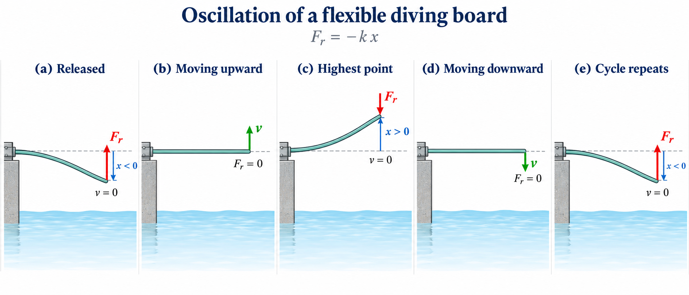
Fig. 15.1 Restoring force and oscillation of a diving board. When displaced from equilibrium, the board experiences a restoring force proportional to its displacement, \(F_{\rm r}=-kx\), for small deformations. The restoring force is greatest at the turning points, where \(v=0\), and vanishes at equilibrium, where the speed is greatest. Adapted from OpenStax, College Physics 2e, Figures 16.2–16.3.#
The constant \(k\) is related to the rigidity (or stiffness) of a system, where a larger the force constant produces a larger restoring force and a stiffer system. The units of \(k\) are newtons per meter (\(N/m\)). A common physics laboratory exercise is to measure restoring forces created by springs (Figure 15.2), determine if they follow Hooke’s law, and calculate their force constants if they do (Figure 15.3).
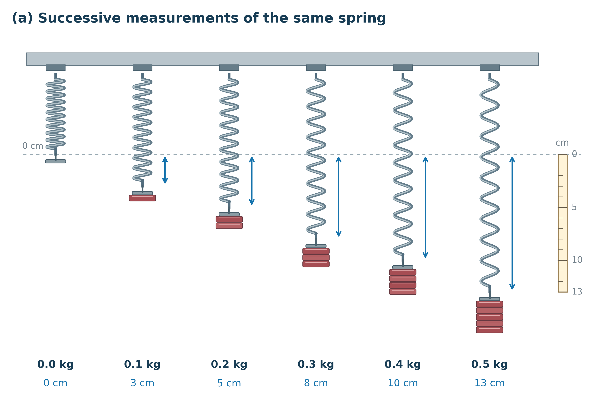
Fig. 15.2 Measuring spring extension. Known masses are added in \(0.1\ {\rm kg}\) increments, and the spring’s extension is measured relative to its unloaded position to the nearest centimeter.#
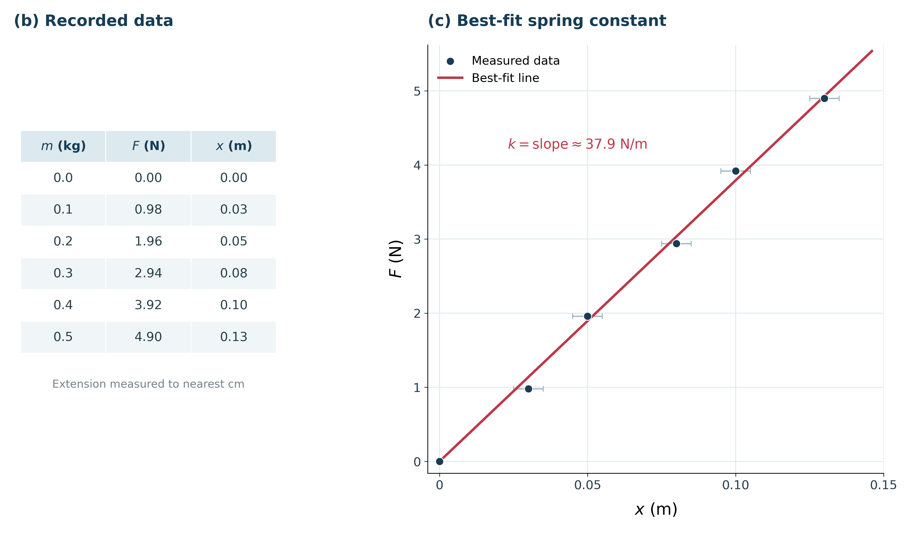
Fig. 15.3 Determining the spring constant. Plotting the applied force, \(F=mg\), against extension, \(x\), gives a best-fit line through the origin with slope \(k=37.9\ {\rm N/m}\). Adapted from OpenStax, College Physics 2e, Figures 16.4.#
15.1.1. Energy in Hooke’s Law of Deformation#
To produce a deformation, work must be done. If the only result is deformation and no work goes into thermal, sound, or kinetic energy, then all the work is initially stored in the deformed object as some form of potential energy. The potential energy stored in a spring is \({\rm PE_s} = \frac{1}{2}kx^2.\) We generalize the idea to elastic potential energy for a deformation of any system that can be describe by Hooke’s law, or
where \({\rm PE_{el}}\) is the elastic potential energy stored in any deformed system that obeys Hooke’s law. This means it has a displacement \(x\) from equilibrium and a constant \(k\).
It is possible to find the work done in deforming a system to find the energy stored. This work is performed by an applied force \(F_{\rm app}\), which is exactly opposite to the restoring force (action-reaction) so that \(F_{\rm app} = kx\). Work done on the the system is the force multiplied by the distance, which is also the area under the curve.
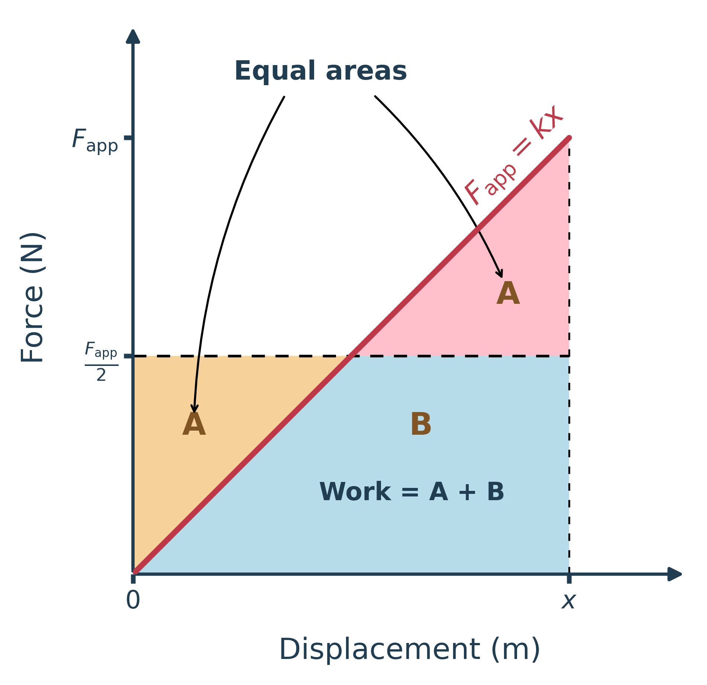
Fig. 15.4 Work done stretching a spring. The work is the area under the force-displacement curve (\(A+B\)). Because the two regions labeled \(A\) have equal areas, the work is equivalent to a rectangle with height \(\frac{1}{2}F_{\rm app}\), giving \(W=\frac{1}{2}F_{\rm app}x=\frac{1}{2}kx^2\). Adapted from OpenStax, College Physics 2e, Figure 16.6.#
15.1.2. Example Problem: Energy Stored in a Toy Gun Spring#
Example Problem: Calculating Stored Energy in a Toy Gun Spring
The Problem
A toy gun uses a spring with a force constant of \(50.0\ {\rm N/m}\) that is compressed by \(0.150\ {\rm m}\). (a) How much elastic potential energy is stored in the compressed spring? (b) If friction and the mass of the spring are negligible, at what speed will a \(2.00\ {\rm g}\) projectile be ejected from the gun?
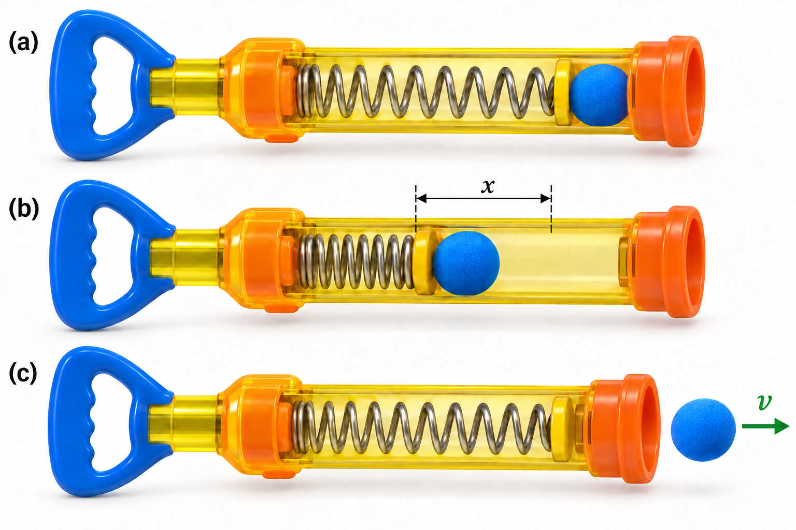
Fig. 15.5 Energy transfer in a spring-powered toy gun. (a) The spring is initially uncompressed. (b) Compressing the spring by a distance \(x\) stores elastic potential energy. (c) When released, the spring transfers its stored energy to the projectile, which leaves the gun with speed \(v\). Adapted from OpenStax, College Physics 2e, Figure 16.7.#
Show worked solution
The Model
We model the toy gun as an ideal spring that obeys Hooke’s law. The spring constant and compression distance determine how much elastic potential energy is stored before the projectile is released. We take the spring’s uncompressed length as the position of zero elastic potential energy and define the horizontal \(x\)-axis along the barrel, with \(+x\) pointing toward the opening.
The projectile is initially at rest. When the spring is released, its stored elastic potential energy is converted into the projectile’s kinetic energy. Because friction and the mass of the spring are neglected, we assume that all the stored energy is transferred to the projectile. We can therefore determine the launch speed using conservation of mechanical energy.
The Math
(a) The elastic potential energy stored in an ideal spring equals the work required to compress it from its equilibrium length. For a spring constant \(k\) and compression distance \(x\), the stored energy is
Using the given spring constant and compression distance, the stored energy becomes
(b) When the spring is released, its elastic potential energy is converted into the kinetic energy of the projectile. Conservation of mechanical energy relates the initially stored energy to the projectile’s kinetic energy as
Solving this relationship symbolically for the projectile’s speed gives \(v=x\sqrt{\frac{k}{m}}.\) The projectile’s mass must first be converted to SI units, so \(2.00\ {\rm g}=2.00\times10^{-3}\ {\rm kg}\). Substituting the known quantities into the expression for speed gives
The Conclusion
Compressing the spring by \(0.150\ {\rm m}\) stores approximately \(0.563\ {\rm J}\) of elastic potential energy. If all this energy is transferred to the projectile, the \(2.00\ {\rm g}\) projectile leaves the toy gun with a speed of \(23.7\ {\rm m/s}\). Although the stored energy is less than one joule, the projectile has a very small mass, so a relatively high launch speed is reasonable. In an actual toy gun, friction and the motion of the spring itself would absorb some energy, resulting in a lower launch speed.
Adapted from OpenStax, College Physics 2e, Example 16.2.
15.2. Period and Frequency in Oscillations#
When you pluck a guitar string, the resulting sound has a steady tone and can last a long time. Each successive vibration of the string takes the same time as the previous one.
Motions that return to their initial position (or repeat themselves) are periodic and occur on a regular interval.
The time to complete one oscillation remains constant and is called the period \(T\). Its units are usually in seconds, but can be in any unit of time (e.g., hours, days, years).
A concept closely related to the period is the frequency of an event. If the period is the time for the motion to return, the frequency is how many times it returns within a given item interval that is not equal to the period. For example, if you are paid biweekly that means you receive a paycheck twice a month and the period between the paychecks is about two weeks.
Frequency \(f\) is defined to be the number of events per unit time (i.e., number of events per second).
For periodic motion, frequency is the number of oscillations per unit time. The mathematical relationship between frequency and period is
THe SI unit for frequency is cycle per second , which is defined as a hertz (\(\rm Hz\)):
where a cycle is one complete oscillation.
15.3. Simple Harmonic Motion#
Simple Harmonic Motion (SHM) is the oscillatory motion for a system where the net force has the same form as Hooke’s law. We call these systems simple harmonic oscillators (SHOs). A simple harmonic oscillator will continue to oscillate with equal displacement on either side of its equilibrium position as long as there is not damping (by friction or other non-conservative forces).
The maximum displacement is called the amplitude \(A\), where the units for the amplitude and displacement are the same. For an object on a spring, the units of amplitude and displacement are in meters, whereas for sound oscillations they can have units of pressure. The amplitude is related to the energy in the oscillation because the energy depends on the displacement (e.g., \(\rm PE_{sp} = \frac{1}{2}kx^2\)). Figure Fig. 15.6 illustrates how the restoring force and velocity change during one complete oscillation.
Fig. 15.6 Simple harmonic motion of a mass–spring system. A block oscillates between \(x=+A\) and \(x=-A\) on a frictionless surface. The restoring force \(F_s=-kx\) always points toward equilibrium and vanishes at \(x=0\), where the block reaches its maximum speed. The free-body diagram illustrates the changing spring force and the constant vertical forces. Adapted from OpenStax, College Physics 2e, Figure 16.9.#
What is special about simple harmonic motion?
The period \(T\) and the frequency \(f\) of SHO are independent of amplitude. A guitar string will oscillate with the same frequency whether plucked gently or vigorously. A SHO can be used as a clock because the period is constant.
Two important factors affect the period of a SHO:
The period is related to how stiff the system is. A very stiff system has a large constant \(k\), which causes the system to have a smaller period (or a string to have a higher pitch).
Period also depends on the mass of the oscillating system. A more massive string produces a lower pitch (or a longer period vibration).
Period of a Simple Harmonic Oscillator
The period of a simple harmonic oscillator is given by
or in terms of the frequency is
Note that neither \(T\) nor \(f\) has any dependence on amplitude.
15.3.1. The Link between SHM and Waves#
If you could see a car bouncing in slow motion as it drove by, the headlight would make a streak moving up and down. This is similar to a mass bouncing on a spring, where we can trace its path on a moving strip of paper. Both motions produce waves that are sine functions. All simple harmonic motion is intimately related to sine and cosine waves.
Fig. 15.7 Oscillatory motion of a car’s suspension. As a car travels over bumps in the road, its suspension causes the headlights to move vertically about their equilibrium position. The cyan line represents a horizontal ray extending from the headlight, while the inset graph illustrates the corresponding vertical displacement, \(\Delta y\), as a function of time. If the restoring force approximately follows Hooke’s law and damping is negligible, the resulting oscillation is sinusoidal. The graph uses an expanded vertical scale in centimeters to make the small displacement easier to visualize. Adapted from OpenStax, College Physics 2e, Figure 16.10.#
The displacement function of time \(t\) in any SHM is given by
where \(A\) is the amplitude and \(T\) is the period of the oscillation. At \(t=0\), the initial position is \(x_0 = A\) and the displacement oscillates back and forth with a period \(T\). From this expression, the velocity \(v\) is also given as a function of time \(t\), or
where \(v_{\rm max} = \omega A = A\sqrt{k/m}\).
The object has zero velocity at the maximum displacement \(x_0 = A;\ v_0 = 0\). The minus sign in \(v(t)\) gives the correct direction for the velocity because the system is moving back toward the equilibrium point.
According to Newton’s second law, the acceleration is \(a = F/m = -kx/m\). Thus, we have a cosine function:
Hence, \(a(t)\) is directly proportional to and in the opposite direction of \(x(t)\).
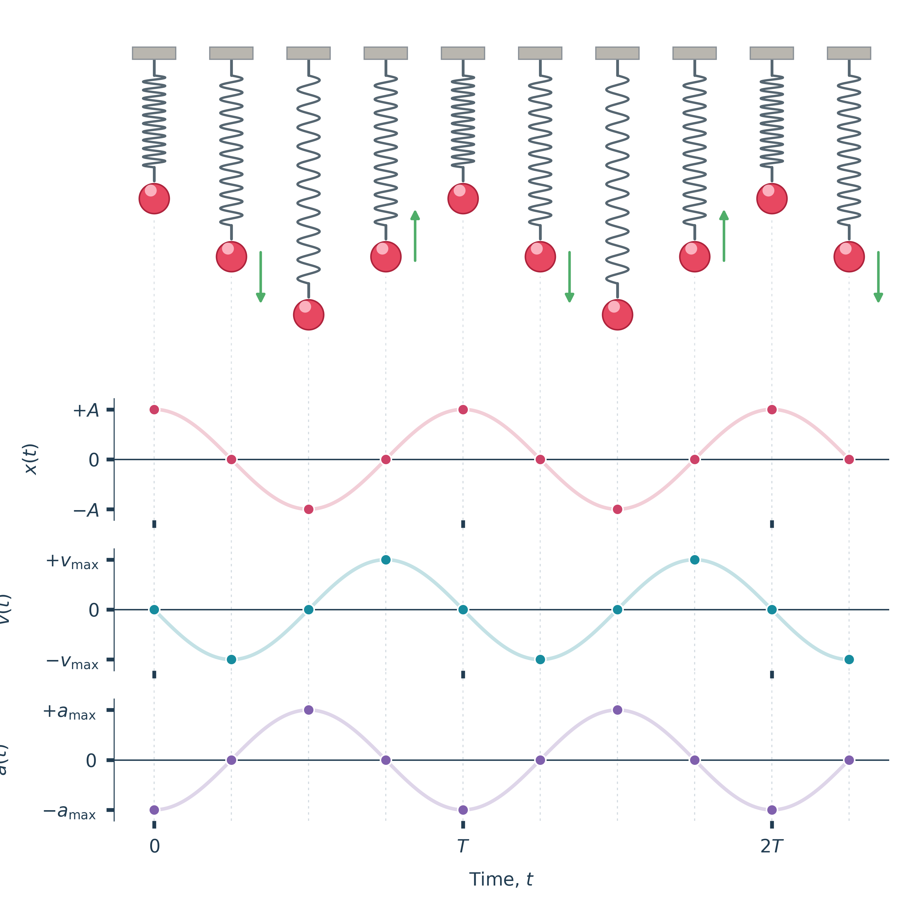
Fig. 15.8 Position, velocity, and acceleration in simple harmonic motion. Ten successive snapshots of a mass oscillating on a vertical spring correspond to the colored points on the three graphs below. The faded curves show the continuous sinusoidal motion. At maximum displacement (\(x=\pm A\)), the velocity is zero and the acceleration points toward equilibrium. As the mass passes through equilibrium (\(x=0\)), its speed is greatest and its acceleration is zero. The vertical guides connect each spring position to its corresponding values of \(x(t)\), \(v(t)\), and \(a(t)\), illustrating their relationship throughout the oscillation. Adapted from OpenStax, College Physics 2e, Figure 16.12.#
15.4. Simple Pendulum#
Pendulums are used in clocks, while others are used for fun (e.g., a child’s swing). For small displacements, a pendulum is a simple harmonic oscillator (SHO). A simple pendulum has a low mass pendulum bob suspended from a light wire (or string).
The pendulum sweeps out an arc, where we can define the displacement as the distance traveled along the arc or the arclength \(s\). The net force on the bob is tangent to the arc and equals \(-mg\sin{\theta}\); Note that this is found in a similar way as a mass sliding on an incline. The weight is divided among the \(x\) and \(y\) components, where the tension cancels the \(mg\cos{\theta}\) component parallel to the string. The remaining force restores the system by pulling the bob back to the equilibrium position (i.e., hanging vertically or \(\theta = 0^\circ\)).
If the restoring force (\(F = -mg\sin{\theta}\)) is directly proportional to the displacement, then we have a SHO. We can make a simplification, where for small angles (e.g., \(\theta \lesssim 15^\circ\)), we can use the small angle approximation, or \(\sin{\theta} \approx \theta\). In the small angle approximation \(\sin{\theta}\) differs from \(\theta\) by about 1% or less. Then, the restoring force $FE is given approximately by
The displacement \(s\) is directly proportional to \(\theta\), where the arclength in a circle is related to its radius \(L\) by \(s = L\theta\) so that
For small angles, the restoring force is written as
Notice that we can substitute \(k = mg/L\), and the restoring force now resembles Hooke’s law, or \(F = -kx\). For angles less than \({\sim}15^\circ\), the restoring force is directly proportional to the displacement, and the simple pendulum is a SHO.
We can find the period of oscillation for a simple pendulum using the equation for the period of a SHO. Mathematically, we have for the SHO:
where we can substitute the constant \(k\) for a simple pendulum to get
The result shows that the period of a simple pendulum does not depend on the mass of the bob, only the length of the string and the acceleration due to gravity \(g\). If the period of oscillation and length of the string are precisely measured, then a simple pendulum can be used to measure \(g\). As with SHOs, the period \(T\) for a simple pendulum is nearly independent of amplitude.
15.5. Energy and the Simple Harmonic Oscillator#
To study the energy, we first consider all the forms of energy it can have. The potential energy stored in the deformation (or displacement) of a simple harmonic oscillator (SHO) is given by \(PE_{\rm el} = \frac{1}{2}kx^2\) because a SHO has no dissipative forces. The other important form of energy is kinetic energy \(KE\).
The conservation of energy (for conservative forces) is given by:
This statement of the conservation of energy is valid for all SHOs including those where the gravitational force plays a role (i.e., simple pendulum).
For the simple pendulum, we used the relation \(s=L\theta\). Thus, we can also replace the velocity with \(v = L\omega\) and the spring constant \(k = mg/L\). The, the conservation of energy becomes
In the case of an undamped SHO, the energy oscillates back and forth between kinetic and potential. So for the example of a mass on a spring sliding on a frictionless surface, the motion starts with all of the energy stored in the spring.
As the object starts to move, the elastic potential energy is converted into kinetic energy and becoming entirely kinetic energy at the equilibrium position.
It is then converted back into elastic potential energy by the spring, the velocity becomes zero when the kinetic energy is completely converted.
Fig. 15.9 Conservation of energy in simple harmonic motion. A block attached to a spring oscillates on a frictionless surface while a stacked energy bar illustrates the continuous exchange between elastic potential energy (\(U_s=\frac{1}{2}kx^2\)) and kinetic energy (\(K=\frac{1}{2}mv^2\)). At the turning points (\(x=\pm A\)), the block momentarily stops and all the mechanical energy is stored in the spring. At equilibrium (\(x=0\)), the block reaches its maximum speed and all the mechanical energy is kinetic. Throughout the motion, the total mechanical energy \(E=K+U_s\) remains constant. Adapted from OpenStax, College Physics 2e, Figure 16.14.#
The conservation of energy principle can be used to derive an expression for the velocity \(v\). Starting the SHO from rest and at maximum displacement (\(x_o = A\)), then the total energy is
This total energy is constant and is shifted back and forth between kinetic and potential energy. The conservation of energy for this system becomes:
where the velocity \(v\) and displacement \(x\) varies after the mass is released but must maintain a constant total energy. We can solve for the velocity \(v\) through some algebra to get
We can use the position equation \(x(t) = A\cos(\omega t)\) (see Eqn. 15.7) for a SHO and the substitution \(\omega = \sqrt{\frac{k}{m}}\) to simplify this expression further. We find that
where the direction of \(v_{\rm max}\) determines the sign initially and \(\sin{(\omega t)}\) flips the sign as it passes through the equilibrium position.
Thus, we have the same form as Equation 15.8. Notice that the maximum velocity \(v_{\rm max}\) depends on three factors.
Maximum velocity is directly proportional to amplitude, \(v_{\rm max} = \omega A\). The greater the maximum displacement, the greater the maximum velocity.
Maximum velocity is greater for stiffer systems because they exert greater force for the same displacement, \(v_{\rm max} \propto \sqrt{k}\).
The maximum velocity is smaller for larger masses because it is inversely proportional to the square root of \(m\), or \(v_{\rm max} \propto 1/\sqrt{m}\). Objects with more mass accelerate more slowly.
A similar calculation for the simple pendulum produces a similar result:
15.6. Damped Harmonic Motion#
A guitar string stops oscillating a few seconds after being plucked. Although we can make friction and non-conservative forces negligibly small, they do not go to zero. Sometimes we may even want to damp oscillations (e.g., car shock absorbers).
For a system that has a small amount of damping, the period and frequency are nearly the same for simple harmonic motion (SHM), but hte amplitude gradually decreases. This occurs because the non-conservative damping force removes energy from the system, usually in the form of thermal energy. Energy removal by non-conservative forces is described as
where \(W_{\rm nc}\) is work done by a non-conservative force (i.e., the damping force). For a damped harmonic oscillator, \(W_{\rm nc}\) is negative because it removes mechanical energy (\(\rm KE + PE\)) from the system.
If you gradually increase the amount of damping in a system, the period and frequency become affected because damping opposes and slows the back and forth motion. If damping is large, the system does not even oscillate, where it slowly moves toward equilibrium.
When we want to damp out oscillations (e.g., car suspension), we may want the system to return to equilibrium as quickly as possible, or critical damping needs to occur. The critically damped system may overshoot the equilibrium position, but it should only do so once.
With sub-critical damping, the system will return to equilibrium faster, but will overshoot and cross over more than once. Such a system is underdamped. An overdamped system may overshoot the equilibrium system, but it will take longer to reach equilibrium.
Critical damping is often desired because such a system returns to equilibrium quickly and remains at equilibrium. A constant force applied to a critically damped system moves the system to a new equilibrium position in the shortest possible time without overshooting.
For example, when you stand on the bathroom scale the reading doesn’t oscillate about some value. It would be inconvenient if reading oscillated about some value for a long time before settling on a value. Damping forces can vary greatly. Friction is sometimes independent of velocity. But many damping forces are velocity-dependent and in complicated ways.
Fig. 15.10 Underdamping, critical damping, and overdamping. Three identical blocks attached to springs are released from rest at the same initial displacement. Each system has the same mass and spring constant but experiences a different damping force. With underdamping (teal), the block repeatedly passes through equilibrium while its oscillation amplitude gradually decreases. With critical damping (orange), the block approaches equilibrium as quickly as possible without overshooting. With overdamping (purple), the stronger resistance slows the block’s return to equilibrium. The synchronized displacement-versus-time graphs illustrate how the damping strength affects the motion. In all three cases, the damping force removes mechanical energy from the system. Adapted from OpenStax, College Physics 2e, Figure 16.21.#
15.7. Forced Oscillations and Resonance#
Some objects (e.g., a piano string) can be forced to oscillate at their natural frequency. This is described by a periodic driving force acting on a simple harmonic oscillator (SHO). The driving force puts energy into the system at a certain frequency, not necessarily the same as the natural frequency fo the system. The natural frequency is the frequency at which a system would oscillate in the absence of a driving or damping force.
Highway rumble strips provide a familiar example of forced oscillations. As a car travels over the regularly spaced grooves, the tires vibrate and produce a buzzing sound. Increasing the car’s speed increases the frequency of these vibrations. If the grooves are separated by a distance \(d\), a car traveling at speed \(v\) encounters them at a driving frequency of \(f_{\rm drive}=v/d\). Some roads even use carefully spaced grooves to produce musical notes!
Video: Why California’s Musical Road Sounds Terrible
Tom Scott explores a musical road in California and explains how the spacing between grooves determines the frequency of the sound.
Now imagine a car traveling over larger, evenly spaced bumps. The suspension has a natural frequency, \(f_0\), at which it tends to oscillate. When the driving frequency approaches this natural frequency, successive bumps reinforce the car’s motion, producing larger oscillations. This phenomenon is called resonance. At driving frequencies far from the natural frequency, the response is smaller. Shock absorbers provide damping, which limits the amplitude by dissipating mechanical energy.
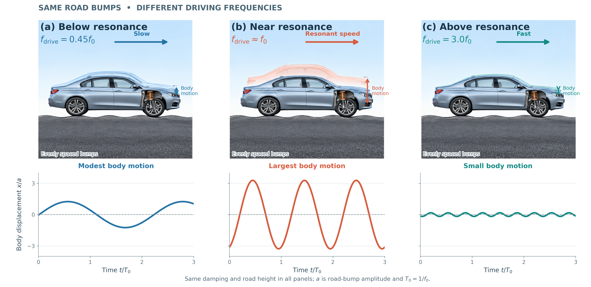
Fig. 15.11 Resonance in a car’s suspension. As a car travels over evenly spaced bumps, its suspension experiences a periodic driving force. (a) Below resonance, the car undergoes moderate vertical oscillations. (b) Near the suspension’s natural frequency, \(f_0\), the oscillation amplitude becomes much larger. (c) Above resonance, the car’s body responds with smaller oscillations. Shock absorbers provide damping that limits the amplitude. Adapted from OpenStax, College Physics 2e, Figure 16.24.#
Fig. 15.12 Effect of damping on resonance. The oscillation amplitude \(X\) reaches its maximum near the natural frequency \(f_0\). Smaller damping produces a taller, narrower resonance peak, while greater damping reduces the maximum amplitude and broadens the response over a range of driving frequencies. Source: OpenStax, College Physics 2e, Figure 16.25.#
Figure 15.12 illustrates how the amplitude depends on driving frequency. The response generally reaches a maximum near the natural frequency, while increasing the damping reduces and broadens the resonance peak.
It is interesting that the widths of the resonance curves depend on the damping: the less damping, the narrower the resonance. If you want a driven oscillator to resonate at a very specific frequency, you need as little damping as possible. Low damping is the case for piano strings and other musical instruments. If you want small-amplitude oscillations (e.g., car suspension) then you want heavy damping.
These features of driven harmonic oscillators apply to a huge variety of systems. When you tune your radio, you are adjusting its resonant frequency so that it only oscillates to the desired station’s broadcast (driving) frequency.
Magnetic resonance imaging (MRI) is a medical diagnostic tool in which atomic nuclei (mostly hydrogen) are made to resonate by incoming radio waves (\(\lambda \sim 100\ {\rm MHz}\)).
A child on a swing is driven by a parent at the swing’s natural frequency to achieve the maximum amplitude.
Speed bumps and gravel roads prove that even a car’s suspension is not immune to resonance.
In our bodies, the chest cavity is a clear example of a system at resonance. The diaphragm and chest wall drive the oscillations of the chest cavity which result in the lungs inflating and deflating. The system is critically damped and the muscular diaphragm oscillates at the resonant value for the system, making it highly efficient.
15.8. Waves#
A wave is a disturbance that propagates (or moves) from the place it was created.
For water waves, the disturbance is in the surface of the water.
For sound waves, the disturbance i a change in air pressure.
For seismic waves, there are several types of disturbances, including disturbances of Earth’s surface and pressure disturbances under the surface.
Visualizing water waves is useful because there is more to it than just a mental image. Water waves exhibit characteristics common to all waves (e.g., amplitude, period, frequency, and energy). All wave characteristics can be described by a small set of underlying principles.
The simplest waves repeat themselves for several cycles and are associated with simple harmonic motion. Consider a simplified water wave, which is an up and down disturbance of the water surface. It causes a seagull on its surface to undergo simple harmonic motion as the wave crests (peaks) and troughs (valleys) pass under the bird.
The time for one complete up and down motion is the wave’s period \(T\), where the wave frequency is given by \(f = 1/T\). The movement of the wave is actually the disturbance moving to the right, not the water itself (otherwise the bird would move to the right too). The wave velocity is the speed at which the disturbance moves. Wave velocity is also called the propagation velocity or propagation speed because the disturbance propagates from one location to another at this speed.
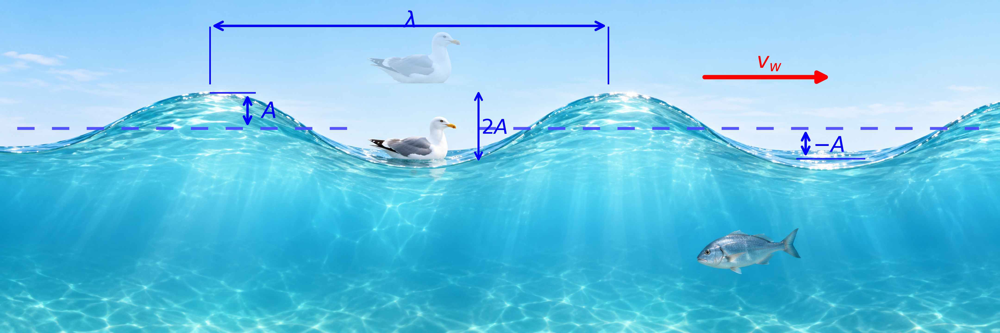
Fig. 15.13 Characteristics of a Surface Wave. The wavelength \(\lambda\) is the horizontal distance between successive crests, while the amplitude \(A\) is the maximum vertical displacement from the equilibrium level. The total height between a crest and a trough is \(2A\). The wave propagates to the right with speed \(v_w\), while the seagull rises and falls as the wave passes.#
The water wave also has a characteristic wavelength \(\lambda\), which is the distance between two adjacent crests or troughs. The speed of the propagation \(v_{\rm wave}\) is the distance the wave travels in a given time. In equation form, this is
This fundamental relationship holds for all types of waves.
For water waves, \(v_{\rm wave}\) is the speed of a surface wave,
For sound waves, \(v_{\rm wave}\) is the speed of sound in a medium,
For light waves, \(v_{\rm wave} = c\) is the speed of light.
15.8.1. Transverse and Longitudinal Waves#
A simple wave can propagate as a
transverse (or shear) wave which moves in the horizontal direction while the surface is disturbed in the vertical direction.
longitudinal (or compressional) wave where the disturbance is parallel to the direction of propagation.
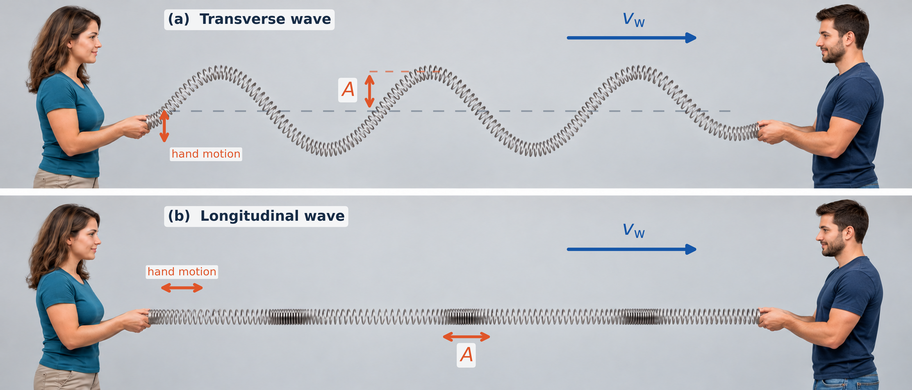
Fig. 15.14 Transverse and Longitudinal Waves. (a) In a transverse wave, the coils oscillate perpendicular to the direction of wave propagation. (b) In a longitudinal wave, the coils oscillate parallel to the direction of propagation, producing alternating compressions and rarefactions. Adapted from OpenStax, College Physics 2e, Figures 16.29 and 16.30.#
Waves may be transverse, longitudinal, or a combination of the two. The waves on the strings of musical instruments are transverse, as well as electromagnetic waves like visible light.
Sound waves in air and water are longitudinal. Their disturbances are periodic variations in pressure that are transmitted in fluids. Fluids do not have appreciable shear strength, and thus sound waves in them must be longitudinal or compressional. Sound in solids can be both longitudinal and transverse.
Earthquake (or seismic) waves under Earth’s surface also have both longitudinal and transverse components, which are called compressional P-waves and shear S-waves. Earthquakes also have surface waves that are similar to surface waves on water.
15.9. Superposition and Interference#
Most waves do not look very simple. Complex waves are more interesting, but they look formidable. Most water waves appear complex because they result from several simple waves adding together. Luckily the rules for adding waves are quite simple.
When two or more waves arrive at the same point, they superimpose themselves on one another. The disturbances of waves are superimposed when they come together, which is a phenomenon called superposition. Each disturbance corresponds to a force, where the forces add. If the disturbances are along the same line, then the resulting wave is a simple addition of the disturbances of the individual waves, or their amplitudes add.
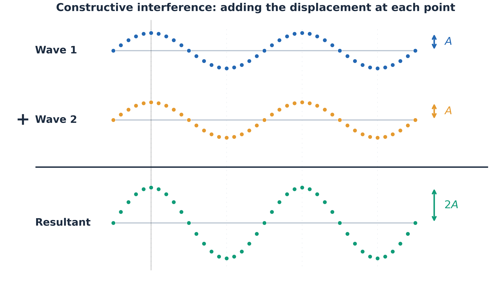
Fig. 15.15 Constructive Interference. Two identical waves with amplitude \(A\) are added point by point. Because their crests and troughs align, the resulting wave has twice the amplitude (\(2A\)) but the same wavelength. Adapted from OpenStax, College Physics 2e, Figure 16.33.#
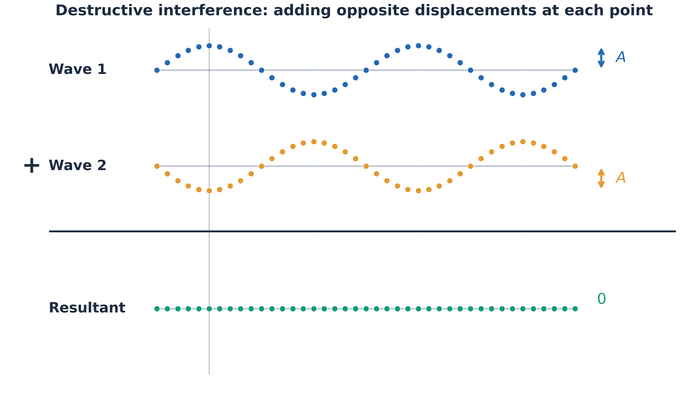
Fig. 15.16 Destructive Interference. Two identical waves with amplitude \(A\) are added point by point, but their crests align with the opposing wave’s troughs. Their equal and opposite displacements cancel, producing a resultant wave with zero amplitude. Adapted from OpenStax, College Physics 2e, Figure 16.34.#
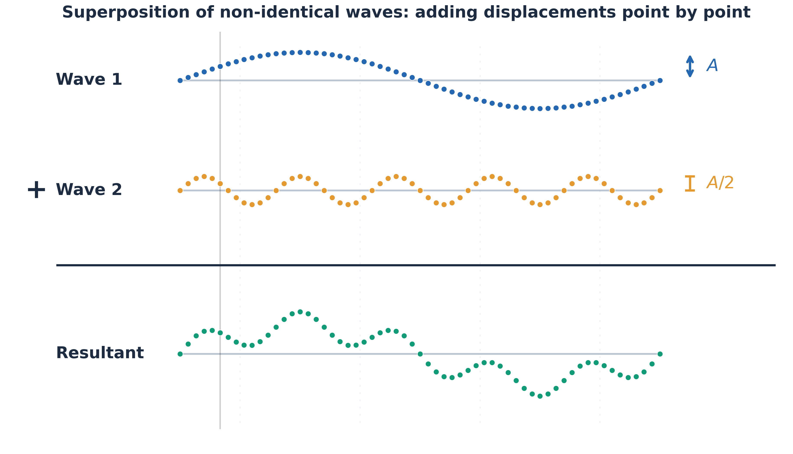
Fig. 15.17 Superposition of Non-identical Waves. Two waves with different amplitudes and wavelengths are added point by point. Depending on their relative displacements, the waves reinforce or partially cancel, producing a more complex resultant. Adapted from OpenStax, College Physics 2e, Figure 16.35.#
Figure 15.15 shows two identical waves that arrive at the same point exactly in phase. The crests of the two waves are precisely aligned, as are the troughs. The superposition produces pure constructive interference. Because the disturbances add, pure constructive interference produces a wave that has twice the amplitude of the individual wave and has the same wavelength.
Figure 15.16 shows the same two identical wave that exactly out of phase, where the crest is precisely aligned with a trough. This superposition produces pure destructive interference. Because the disturbances are in the opposite direction, the resulting amplitude is zero. The waves completely cancel.
While pure constructive and destructive interference do occur, they require precisely aligned identical waves. The superposition of most waves produces a combination of constructive and destructive interference. For example, sound from a stereo can be loud in one spot and quiet in another. The sound waves add partially constructively and destructively at different locations. A stereo has (at least) 2 speakers, and waves can reflect from the walls. All these waves superimpose. The addition of two dissimilar waves changes the overall wave shape and frequency (see Fig. 15.17) to make it look more complicated.
15.9.1. Standing Waves#
Sometime waves do not seem to move, rather they “stand” in place. These unmoving waves can be seen on the surface of a glass of milk in a refrigerator. Vibrations from the refrigerator motor create waves on the milk that oscillate up and down but do not seem to move across the surface. These waves are formed by the superposition of two (or more) moving waves.
Fig. 15.18 Vibrations on the surface of milk. Vibrations from a refrigerator motor can excite oscillations in the milk. This illustrative standing-wave pattern changes in amplitude while the locations of its nodal rings remain fixed.#

Fig. 15.19 Ripples from approaching footsteps. In Jurassic Park (1993), ground vibrations from an approaching dinosaur disturb water in a puddle. This illustrates how vibrations excite surface waves, although the ripples are not necessarily a standing-wave pattern. Source: Jurassic Park (Universal Pictures, 1993), GIF hosted on Tenor.#
Waves can move through each other with their disturbances adding as they go by. If the two waves have the same amplitude and wavelength, then they alternate between constructive and destructive interference. The resultant looks like a wave standing in place, or a standing wave. Waves on a guitar string or within organ pipes can be standing waves.
A closer look at earthquakes provides evidence for conditions appropriate for resonance, standing waves, and constructive/destructive interference. A building may be vibrated for several seconds with a driving frequency matching that of the natural frequency of vibration of the building. This produces a resonance allowing for one building to collapse while the neighboring buildings stay upright. This often depends on the building height, which sets the condition for a standing wave. As the earthquake waves travel along Earth’s surface and reflect off denser rocks, constructive interference occurs at certain points.
Fig. 15.20 Formation of a standing wave through superposition. Two identical waves travel in opposite directions, with their displacements adding to produce a standing wave. The blue and orange waves propagate to the right and left, respectively, while the green resultant oscillates without traveling. Nodes remain at zero displacement, whereas antinodes reach maximum displacements of \(\pm 2A\). At \(t=T/4\) and \(t=3T/4\), the entire resultant momentarily passes through equilibrium. The animation pauses at quarter-period intervals to illustrate these changes. Adapted from OpenStax, College Physics 2e, Figure 16.36.#
Standing waves are also found on the strings of musical instruments and are due to reflections of waves from the ends of the string.
Nodes are the points where the string does not move, or more generally, where the wave disturbance is zero in a standing wave. The fixed ends of strings must be nodes because the string cannot move there.
Antinodes are the location of maximum amplitude in standing waves.
Standing waves on strings have a frequency that is related to the propagation speed \(v_{\rm wave}\) of the disturbance on the string. The wavelength \(\lambda\) is determined by the distance between the points where the string is fixed in place.
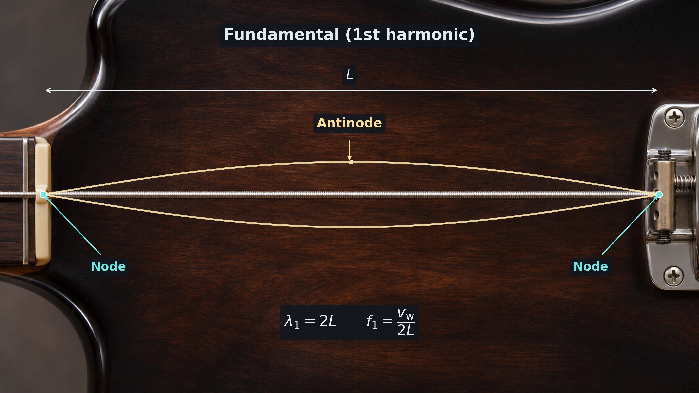
Fig. 15.21 Fundamental standing-wave mode on a bass guitar string. The string has nodes at the nut and bridge and one antinode at its midpoint. The two highlighted curves show the opposite extremes of the vibrating string. The wavelength is \(\lambda_1=2L\), giving a fundamental frequency of \(f_1=v_{\rm w}/(2L)\). The displacement is exaggerated for visibility. Adapted from OpenStax, College Physics 2e, Figure 16.37.#
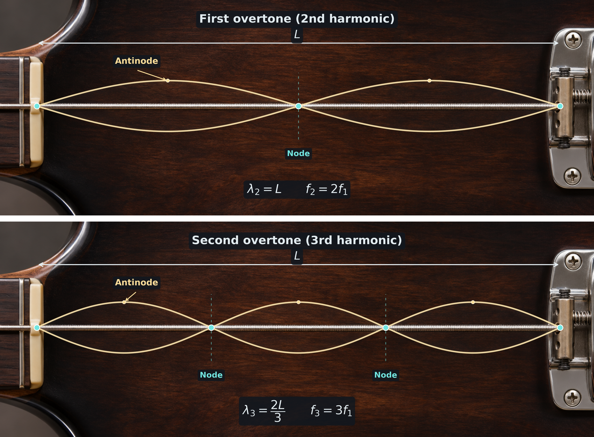
Fig. 15.22 Higher standing-wave modes on a bass guitar string. The first overtone (second harmonic) has two antinodes and one interior node, with \(\lambda_2=L\) and \(f_2=2f_1\). The second overtone (third harmonic) has three antinodes and two interior nodes, with \(\lambda_3=2L/3\) and \(f_3=3f_1\). Adjacent segments vibrate in opposite directions, while the nodes remain stationary. Adapted from OpenStax, College Physics 2e, Figure 16.38.#
The lowest frequency is called the fundamental frequency, which is used for the longest wavelength, \(\lambda_1 = 2L\). The fundamental frequency, overtones, or harmonics can be represented by
Therefore the fundamental frequency is \(f_1 = v_{\rm wave}/2L\). The overtones or harmonics are the multiples of the fundamental frequency. The first harmonic can be calculated since \(\lambda_2 = L\), which makes the first harmonic frequency is \(f_2 = v_{\rm wave}/L = 2f_1.\) Similarly, \(f_3 = 3f_1\).
All the frequencies can be changed by adjusting the tension in the string. The greater the tension, the grater \(v_{\rm wave}\) is and the higher the frequencies.
15.9.2. Beats#
Striking two adjacent keys on a piano produces a warbling combination usually considered to be unpleasant. the superposition of two similar (but not identical) waves is the culprit. The combined sound of the two jet engines goes up and down in loudness (volume). The varying loudness happens because the sound waves have similar (but not identical) frequencies. This warbling is due to the alternating constructive and destructive interference between the waves.
The wave resulting from the superposition of two similar-frequency waves has a frequency that is the average of the two. this wave fluctuates in amplitude, or beats, at the beat frequency. We can determine the beat frequency by adding two waves together mathematically.
A single wave can be represented as
where \(\omega = 2\pi f\) and \(f = 1/T\) is the frequency of the wave. Adding two waves that have different frequencies but identical amplitudes produces
Using a trigonometric identity, we can write this expression as
where \(f_{\rm B} = |f_1 - f_2|\) is the beat frequency and \(f_{\rm ave} = (f_1 + f_2)/2\) is the average frequency.
These results mean that the resultant wave has twice the amplitude and average frequency of the two superimposed waves. It also fluctuates in overall amplitude at the beat frequency \(f_{\rm B}\).
The first cosine term effectively causes the amplitude to go up and down.
The second cosine term is the wave with the average frequency \(f_{\rm ave}\).
Fig. 15.23 Beats produced by superposition. Two waves with equal amplitudes but slightly different frequencies (\(f_1=2.5\ {\rm Hz}\) and \(f_2=2.9\ {\rm Hz}\)) combine to produce a resultant wave whose amplitude varies periodically. Constructive interference produces a maximum amplitude of \(2A\), while destructive interference produces complete cancellation. The beat frequency is \(f_{\rm beat}=|f_2-f_1|=0.4\ {\rm Hz}\). The animation pauses at these interference conditions to illustrate how the individual displacements combine. Adapted from OpenStax, College Physics 2e, Figure 16.39.#
15.10. Energy in Waves#
Waves carry energy, where the energy of some waves can be directly observed. Earthquakes can shake whole cities to the ground. Ultrasound is used for deep-heat treatment of muscle strains, while a laser beam can burn away a malignancy.
The amount of energy in a wave is related to its amplitude. Large-amplitude earthquakes produce large ground displacements. Loud sounds have higher pressure amplitudes and come from larger-amplitude source vibrations than soft sounds.
More quantitatively, a wave is a displacement that is resisted by a restoring force. the larger the displacement \(x\), the larger the force \(F = kx\) needed to create it. Energy is put into the wave by the work done to create it ands is related to the amplitude. A wave’s energy is directly proportional to its amplitude squared through
The energy effects of a wave depend on time as well as amplitude. For example, the longer deep-heat ultrasound is applied, the more energy it transfers. Waves can also be concentrated or spread out. For example, Sunlight can be focused to burn wood because it is concentrated, where earthquakes do less damage as they spread out farther from the source. In both cases, changing the area the waves cover has important effects. The intensity \(I\) of a wave is measured as power \(P\) per unit area \(A\):
The definition of intensity is valid for any energy in transit, including that carried by waves. The SI unit for intensity is watts per square meter (\(\rm W/m^2\)). For example, the Earth receives an intensity of sunlight equal to \(1361\ {\rm W/m^2}\) (i.e., solar constant) of energy just above the atmosphere, where a majority comes in the visible and infrared portions of the electromagnetic spectrum.
15.11. In-Class Exercises#
15.11.1. Instructions#
You will use the final 20 minutes of class to begin the problems assigned for that class day. First, you must make a serious attempt on each assigned problem independently. After developing your own approach, you may compare ideas and discuss the problems with other students.
Each student must prepare and submit an individual solution. Organize each quantitative solution using the Problem–Model–Math–Conclusion format. Show your reasoning, equations, substitutions with units, and interpretation of the result. A numerical answer without supporting work is not a complete solution.
Open this page in Google Colab so you can easily copy the problems to the template without retyping them.
Export your completed Jupyter notebook as a PDF and submit the PDF to D2L by 11:59 p.m. CT on the day of class. The PDF filename must follow the format LastName_ChXX_SetY.pdf, where XX is the two-digit chapter number and Y is the problem-set number.
Make your own copy before beginning
A read-only Jupyter notebook template is available on D2L. Before entering any work, you must make your own editable copy of the notebook by selecting Save a copy in Drive.
Changes made directly to the read-only template cannot be saved. It does not matter how much work you enter: if you have not made your own copy, your changes will be lost. Confirm that you can rename and save your copy before beginning the problems.
15.11.2. Problems#
Problem 1
One type of BB gun uses a spring-driven plunger to blow the BB from its barrel.
(a) Calculate the force constant of the plunger’s spring if you must compress it \(0.15\ {\rm m}\) to drive the \(0.05\)-\(\rm kg\) plunger to a top speed of \(20\ {\rm m/s}\).
(b) What force must be exerted to compress the spring?
Problem 2
A diver on a diving board is undergoing simple harmonic motion. Her mass is \(55\ {\rm kg}\), and the period of her motion is \(0.80\ {\rm s}\). The next diver is a male whose period of simple harmonic oscillation is \(1.05\ {\rm s}\). What is his mass if the mass of the board is negligible?
Problem 3
(a) What is the effect on the period of a pendulum if you double its length?
(b) What is the effect on the period of a pendulum if you decrease its length by \(5.00\%\)?
Problem 4
If a car has a suspension system with a force constant of \(5.00\times10^4\ {\rm N/m}\), how much energy must the car’s shocks remove to dampen an oscillation starting with a maximum displacement of \(0.075\ {\rm m}\)?
Problem 5
What is the wavelength of the waves you create in a swimming pool if you splash your hand at a rate of \(2.00\ {\rm Hz}\) and the waves propagate at \(0.800\ {\rm m/s}\)?
Problem 6
Two tuning forks having frequencies of \(460\ {\rm Hz}\) and \(464\ {\rm Hz}\) are struck simultaneously. What average frequency will you hear, and what will the beat frequency be?
15.12. Homework#
15.12.1. Instructions#
Homework assignment
The homework is designed to give you regular practice applying the ideas developed in this chapter. A read-only Jupyter notebook template for the assignment is available on D2L. Before entering any work, you must make your own editable copy of the notebook. Changes made directly to the read-only template cannot be saved, so confirm that you can rename and save your copy before beginning.
There are two types of homework questions:
Conceptual questions: Copy the question into your notebook and answer it under a heading titled The Conclusion. Your response should be a paragraph that directly answers the question and explains the physical reasoning behind your answer. A Model or Math section is not required unless the question genuinely requires a calculation.
Quantitative questions: Copy the problem into your notebook and organize your solution using the Problem–Model–Math–Conclusion format. Identify the physical situation, assumptions, knowns, unknowns, and sign convention in the Model; develop and apply the necessary equations in the Math; and state, interpret, and check your result in the Conclusion. Include units in numerical substitutions.
The worked examples on the course webpage model the reasoning and solution style expected in your homework.
Don’t wait until the night it is due
Homework is much easier to manage when you complete a couple of problems at a time as you work through the chapter. This gives you time to identify concepts that you do not understand and ask questions before the due date. Trying to complete the entire assignment the night it is due usually leaves little time to diagnose mistakes or revisit the course material.
Submission
When your assignment is complete, export the Jupyter notebook as a PDF and submit the PDF to D2L by 11:59 p.m. CT on the due date.
Name your submitted file using the format LastName_ChXX_HW.pdf. Replace LastName with your last name and XX with the two-digit chapter number. For example, homework for Chapter 2 submitted by Jane Smith would be Smith_Ch02_HW.pdf.
Before submitting, open the PDF and make sure that all questions, equations, figures, and solutions are visible and readable.
15.12.2. Conceptual Questions#
Problem 1
Explain why you expect an object made of a stiff material to vibrate at a higher frequency than a similar object made of a spongy material.
Problem 2
If the spring constant of a simple harmonic oscillator is doubled, by what factor will the mass of the system need to change in order for the frequency of the motion to remain the same?
15.12.3. Quantitative Questions#
Problem 3
Suppose you attach an object of mass \(m\) to a vertical spring originally at rest and let it bounce up and down. You release the object from rest at the spring’s original rest length.
(a) Show that the spring exerts an upward force of \(2.00\,mg\) on the object at its lowest point.
(b) If the spring has a force constant of \(10\ {\rm N/m}\) and a \(0.25\ {\rm kg}\) object is set in motion as described, find the amplitude of the oscillations.
(c) Find the maximum velocity.
Problem 4
What is the length of a pendulum that has a period of \(0.50\ {\rm s}\)?
Problem 5
How much energy must the shock absorbers of a \(1200\ {\rm kg}\) car dissipate in order to damp a bounce that initially has a velocity of \(0.80\ {\rm m/s}\) at the equilibrium position? Assume the car returns to its original vertical position.
Problem 6
What is the wavelength of an earthquake that shakes you with a frequency of \(10\ {\rm Hz}\) and gets to another city \(84\ {\rm km}\) away in \(12\ {\rm s}\)?